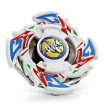

Dragoon GT
| Dragoon GT (Galaxy Turbo) | |
|  | |
| Number: | A-112 |
|---|---|
| System: | Engine Gear |
| Type: | Attack |
Contents
Attack Ring (AR): G Upper
- Weight: 7 grams
Despite its name, G Upper has only moderate Upper Attack ability, having relatively short, shallow slopes that only produce mild lifting power. What G Upper does have, however, are four very well shaped, and excellently positioned contact points for Smash Attack in left spin. In addition to this, it is one of the wider ARs released, giving it excellent range. The majority of the weight is situated just behind the contact points, along the perimeter of the AR, which is ideal for Smash Attack. The slopes, and rounded shape of the wings, allow G Upper to destabilise opponents and score wins by outspin, even on Storm Grip Base. All together, this makes a very well-rounded AR, arguably more reliable (if only due to its ability to win by OS) than the most popular left spin Smash Attack AR, Dragoon G's Eight Spiker.
As with all left-spin Smash Attack ARs, G Upper is generally limited to Storm Grip Base and SG Metal Flat 2 (on which they generally lack the stopping-ability Right Spin ARs gain from being in the same spin direction as the majority of opponents) in terms of suitable bases. However, G Upper does make excellent use of the bases that are available to it, and the two more powerful bases with which it is either incompatible or inefficient (Grip Base and SG Grip Change Base), are very rare parts, and the limitations of taller bases such as SG Grip Change Base and Customize Grip Change base are just as relevant to all but one or two smash attack ARs, regardless of spin direction.
Use in Smash Attack Customization
A great combination for G Upper is a rather standard smash attack setup, employing the good speed of Storm Grip and excellent weight distribution of Wide Defense to provide heavy hits on opponents. Due to the low height of Storm Grip, and the slopes of G Upper, this combination, despite being in opposite spin to most opponents, manages to knock opponents off balance in a style reminiscent of Upper Attack. This allows for easy outspins, and is arguably one of the most reliable Storm Grip combinations in existence.
- AR: G Upper (Dragoon GT)
- WD: Wide Defense
- SG: Neo Left SG (Normal Version)
- BB: Storm Grip (Dragoon S)
Both a Normal Left SG and Neo Left SG with Metal Weight Core may be used in place of the Neo Left EG (Normal Version), due to the relatively limited distribution of the entirely plastic "Normal Core" (only released with Dragoon V2), but the less weight directly over the tip of Storm Grip, the better. Wide Defense, however, is absolutely vital to the effective performance of this combination.
Weight Disk (WD): Ten Wide
See Ten Wide
Spin Gear (SG): Left Engine Gear (Turbo)
- Weight: 7 grams
The Turbo Left EG is a successor to the Normal Left EG, providing a release four times stronger than its predecessor (albeit over a shorter time period). As with most Engine Gears, it is generally avoided due to tall height and impractical bases. The high speed of the Turbo Left EG has use in One-Hit Knockout combinations, though these combinations, by definition, are quite risky and unreliable.
Use in OHKO Customization
- AR: Spike Dragon (Dragoon V2)
- WD: 10 Heavy
- SG: Left Engine Gear (Turbo)
- BB: First Clutch Base (Dragoon G Version)
- CEW: Metal Semi Flat (Dranzer GT, Numerous Hasbro Releases)
This is a standard OHKO attacker: High Power, High Recoil AR, fast movement, and everything else focused on surviving its own recoil. Such combinations are generally not used for serious play, but if you have nothing better, and are sure your opponent will play an easily knocked out beyblade, it can be used successfully.
Customize Engine Weight (CEW): Metal Grip
- Weight: 3 grams
The Metal Grip CEW, as the name suggests, is a metal tip with a rubber coating, increasing grip with the stadium floor. However, due to its relatively heavy weight and the grip produced, it tends to ?anchor? combinations it is used in, slowing their movement. This property does give it some minor use in Defensive customizations, however it is heavily outclassed by Wolborg 2?s SG (Bearing Version 2) and even Defense Grip Base (Seaborg), due to its tall height, poor survival, and lack of any suitable engine gears or blade bases that would make it worthwhile.
Blade Base (BB): First Clutch Base (Dragoon GT Version)
- Weight: 7 grams
Like all First Clutch blade bases, Dragoon GT?s base releases the engine gear at the start of the battle. The base has four protrusions, all of which are rather large and flat (similar in shape to Dragoon V2?s Spike Dragon AR). These protrusions, whilst providing some smash attack, generally produce a lot of recoil, meaning they are just as likely to cause self-KO as they are to KO the opponent. Generally, its use is limited to OHKO combinations, though as the protrusions can cause breakage issues, it?s often best to simply not use this base at all.
Other Versions
- Dragoon GT - Special Starter Set (Black)
- Dragoon GT - Special Booster (Blue)
- Dragoon GT - Takao VS Max / HMS VS EG Battle Set Fire Blood Ver. (Red)
Gallery
Dragoon GT - Original Version
-
Dragoon GT front view
-
Dragoon GT front view 2
-
Dragoon GT pieces
-
Dragoon GT side view
-
Dragoon GT side view 2
-
Dragoon GT bottom view
-
Dragoon GT sticker scan
Overall
Due to its price and rarity, especially compared to the functionally similar but significantly cheaper Dragoon G, Dragoon GT is generally only worth buying for collection purposes. However, if one is willing and able to use it, the Attack ring is a heavily-underrated and very powerful part, so in that case, it could be seen as a worthwhile competitive purchase.